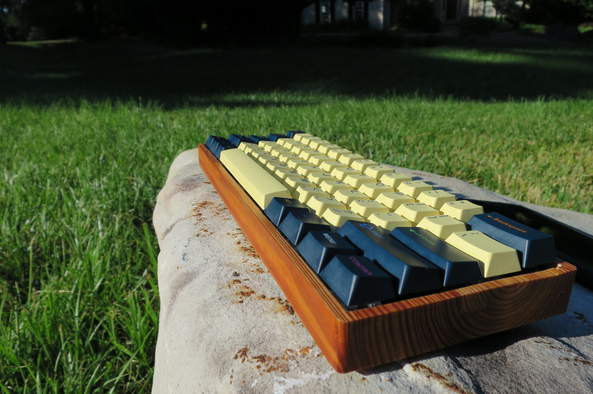

Projects / Mechanical keyboards
Mechanical keyboards have been one of my hobbies for many years. It involves creating, designing and building mechanical keyboards. This hobby requires quite a few skills. You have to do research into exactly what you want, making sure that all of the parts work together, it also requires hardware knowledge of circuits and then software knowledge of C code.
Background
Mechanical keyboards originally interested me because I was a big fan of typing on them. Soon after I got my first one I learned that there was a massive DIY community that is passionate about building their own keyboards. Multiple communities wrote embedded code and made it open source known as QMK . This community is massive and also released schematics for numerous types of keyboards. There are many different types of layouts for keyboard from full-size with a number pad that most are used to, all the way down to a 40% ortholinear keyboard like I made below.
Process
The picture to the left is an image of the Planck keyboard. The Planck is an ortholinear keyboard that comes as a kit where you receive all of the parts but then you need to solder it and program it yourself. The newest version of the Planck also includes a spot for a rotary encoder which can be programmed to have numerous functions. After receiving this kit I added my own switches and soldered them in. I then bought keycaps and wrote C code that I flashed to the keyboard. Writing your own C code for the keyboard allows for you to write your own keymap for it.
This next keyboard is another one that I built. The case for this keyboard was cut myself using a CNC router. The wood used for this was reclaimed wood from a North Carolina tobacco factory. This board was also programmed using the QMK software as well.

This is an image of one of the keyboards that I built in the fairy pools of scotland. I brought it along so I could take pictues of my keyboard in the many spots I visited during my trip to Scotland.
More pictures of keyboards as well as code written for the keyboards are available upon request!